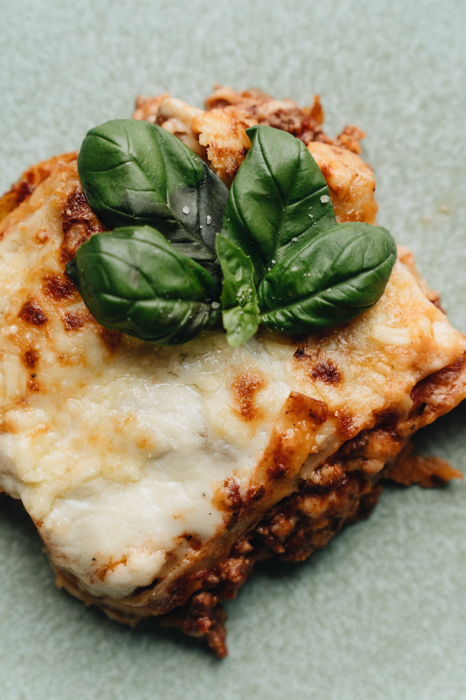

Top 5 Recipes
1. Lasagna
Lasagna is a baked Italian dish consisting of wide strips of pasta cooked and layered with meat or vegetables, cheese, and tomato sauce.
Learn to Make Lasagna Here
2. Banana Pudding